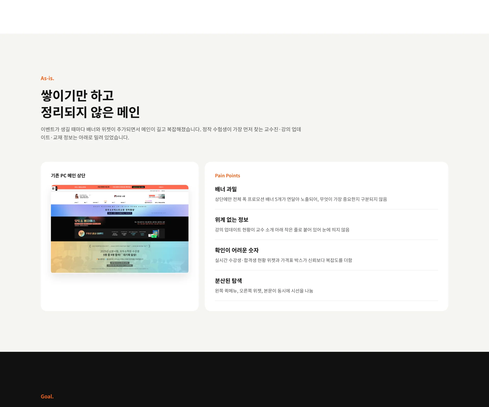
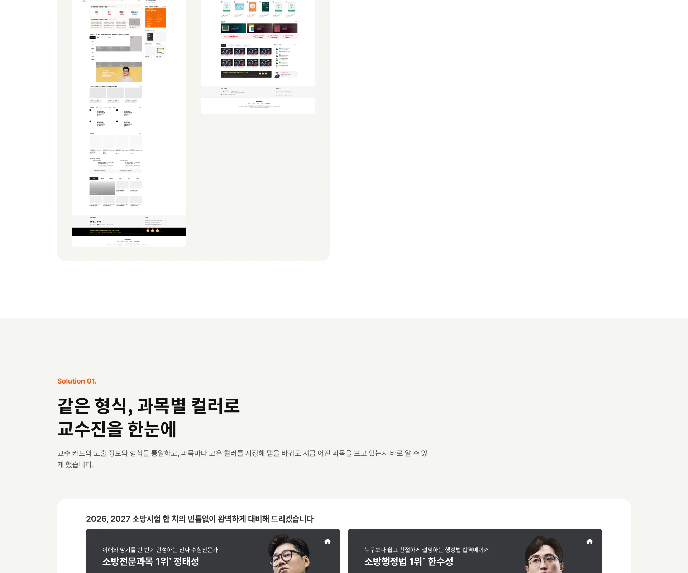
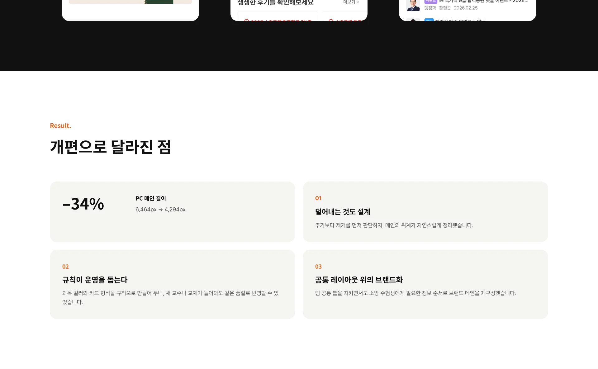
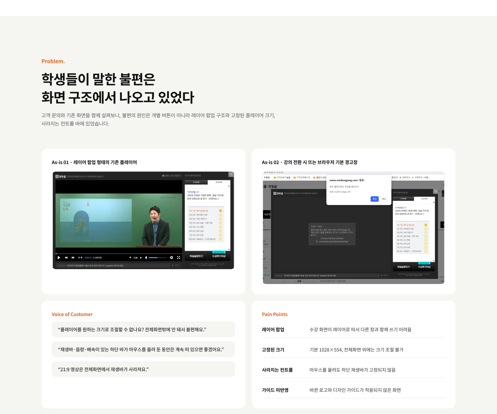
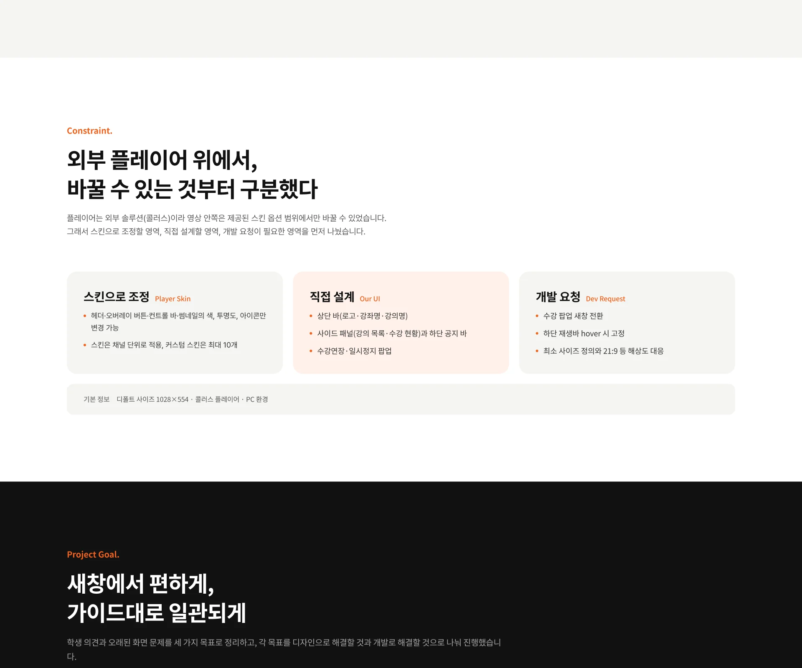
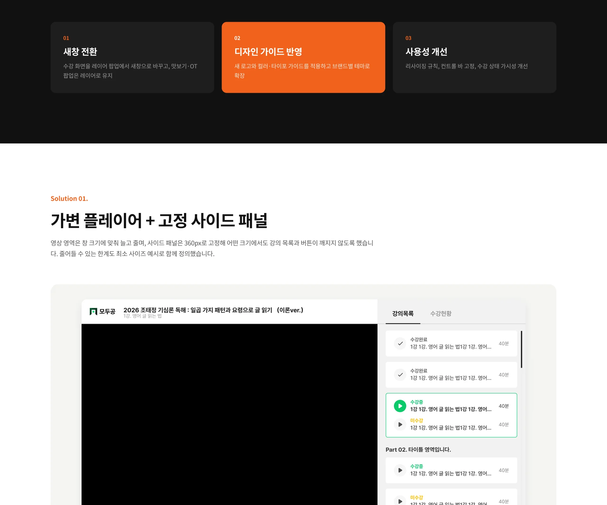
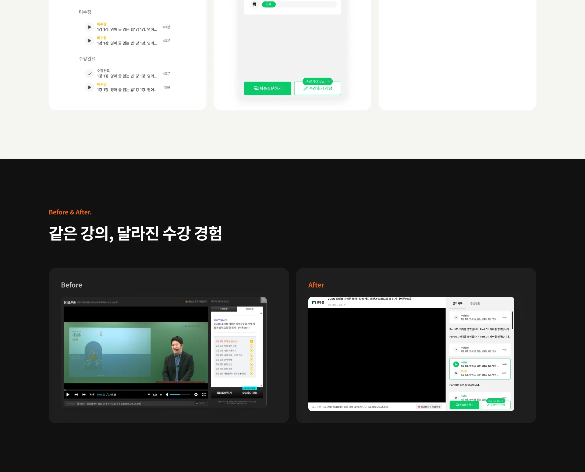

Case 03 · 모두소 · 모두공
모두시리즈 서비스 개선
배너가 쌓여 길어진 메인을 수험생이 먼저 찾는 정보 순서로 다시 구성하고, 오래된 수강 플레이어를 학생 의견과 외부 제약에 맞춰 다시 설계한 개선 작업
- 기간2026
- 범위모두소 PC·모바일 메인 · 모두공 PC 수강 플레이어
- 역할섹션 구성 · 콘텐츠 위계 설계 · UI 개선
Part 1모두소 메인 구조 개편







Part 2모두공 PC 수강 플레이어 UI 개선





